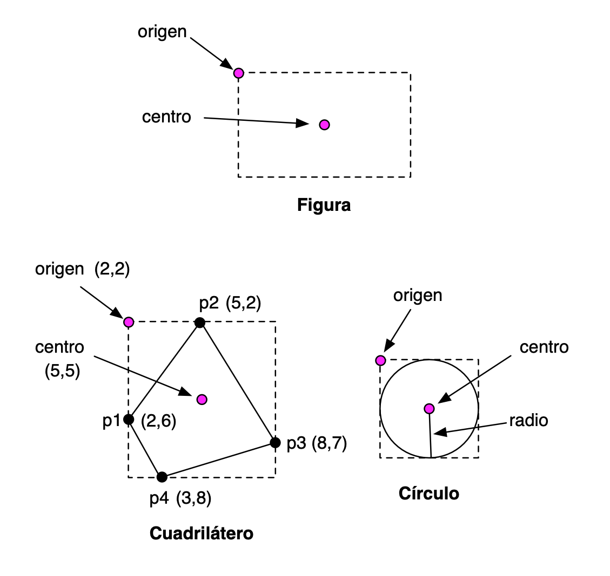

Práctica 10: Programación Orientada a Objetos en Swift¶
Entrega de la práctica¶
Para entregar la práctica debes subir a Moodle el fichero
practica10.swift con una cabecera inicial con tu nombre y apellidos,
y las soluciones de cada ejercicio separadas por comentarios.
Ejercicio 1 (repaso de clausuras)¶
Un ejercicio de repaso del apartado de clausuras del tema anterior. En este caso, se hace énfasis en las clausuras con estado local mutable.
a) ¿Qué se imprime al ejecutar el siguiente programa? Reflexiona sobre el funcionamiento del código, compruébalo con el compilador y experimenta haciendo cambios y comprobando el resultado.
1 2 3 4 5 6 7 8 9 10 11 12 13 14 15 16 17 18 19 | |
b) Completa el siguiente código para que compile y funcione correctamente e imprima lo indicado. El hueco puede contener más de una línea de código.
1 2 3 4 5 6 7 8 9 10 11 12 | |
Ejercicio 2¶
a) El siguiente código usa observadores de propiedades y una variable del tipo (estática).
¿Qué se imprime al final de su ejecución? Reflexiona sobre el funcionamiento del código, compruébalo con el compilador y experimenta haciendo cambios y comprobando el resultado.
1 2 3 4 5 6 7 8 9 10 11 12 13 14 15 16 17 18 19 | |
b) Escribe un ejemplo de código en el que definas una relación de herencia entre una clase base y una clase derivada. Comprueba en el código que un objeto de la clase derivada hereda las propiedades y métodos de la clase base.
Investiga sobre el funcionamiento de la herencia en Swift. Escribe ejemplos en donde compruebes este funcionamiento. Algunos ejemplos de preguntas que puedes investigar (puedes añadir tú más preguntas):
- ¿Se puede sobreescribir el valor de una propiedad almacenada? ¿Y calculada?
- ¿Se puede añadir un observador a una propiedad de la clase base en una clase derivada?
- ¿Hereda la clase derivada propiedades y métodos estáticos de la clase base?
- ¿Cómo se puede llamar a la implementación de un método de la clase base en una sobreescritura de ese mismo método en la clase derivada?
Ejercicio 3¶
Tenemos que escribir un programa que permita definir resultados de partidos de fútbol y calcular la puntuación de un conjunto de equipos una vez que se han jugado esos partidos.
Escribe código en Swift que permita resolver el problema, utilizando structs.
Un ejemplo de ejecución del código debería ser cómo sigue:
1 2 3 4 5 6 7 8 9 10 11 12 13 14 15 16 17 18 19 20 21 | |
Ejercicio 4¶
En este ejercicio vamos a trabajar con figuras geométricas usando estructuras y clases.
En el ejercicio deberás usar la función para calcular la raíz cuadrada y el valor de la constante matemática pi.
- Para usar la función
sqrtdebes importar la libreríaFoundation:
1 | |
- El valor de la constante matemática pi lo puedes obtener con la
propiedad
Double.pi.
Suponemos que estamos trabajando con coordenadas
de pantalla, en las que la coordenada (0,0) representa la coordenada
de la esquina superior izquierda de la pantalla. La coordenada Y crece
hacia abajo y la coordenada X crece hacia la derecha. Las coordenadas
se definirán con números decimales (Double).
Vamos a definir las siguientes estructuras y clases:
- Estructuras:
Punto,Tamaño - Clases:
Figura(clase padre),CuadriláteroyCirculo(clases derivadas).

Vamos a definir propiedades almacenadas y propiedades calculadas para todas las figuras geométricas.
Estructuras Punto y Tamaño
Las debes declarar tal y como aparecen en los apuntes.
Clase padre Figura:
- Constructor:
Figura(origen: Punto, tamaño: Tamaño)
- Propiedades de instancia almacenadas:
origen(Punto) que define las coordenadas de la esquina superior izquierda del rectángulo que define la figuratamaño(Tamaño) que define el alto y el ancho del rectángulo que define la figura.
- Propiedades de instancia calculadas:
area(Double, solo lectura) que devuelve el área del rectángulo que engloba la figura.centro(Punto, propiedad de lectura y escritura). Es el centro del rectángulo que define la figura. Si modificamos el centro se modifica la posición del origen de la figura.
Clase derivada Cuadrilatero
Un cuadrilátero se define por cuatro puntos. La figura padre representa el rectángulo que engloba los cuatro puntos del cuadrilátero (ver imagen arriba).
- Constructor:
Cuadrilatero(p1: Punto, p2: Punto, p3: Punto, p4: Punto). Los puntos se dan en el orden de las El orden de los puntos definido por el sentido de las agujas del reloj. Suponemos que se . Al crear el cuadrilátero deberemos actualizar las propiedadesorigenytamañode la figura.
- Propiedades de instancia almacenadas:
- Las hereda de la clase padre:
origenytamaño.
- Las hereda de la clase padre:
- Propiedades de instancia calculadas:
centro(Punto, de lectura y escritura), heredada de la clase padre. Elsettermodifica la posición de los puntos del cuadrilátero y del origen de la figura, desplazándolos los mismos incrementos en los que ha sido desplazado el centro de la figura.area(Double, sólo lectura ) que devuelve el área del cuadrilátero.
Clase derivada Circulo
Un círculo se define por un centro y un radio. La figura padre representa el cuadrado más pequeño en el que está inscrito el círculo (ver imagen arriba).
- Constructor:
Circulo(centro: Punto, radio: Double). Al crear el círculo deberemos actualizar las propiedadesorigenytamañode la figura.
- Propiedades de instancia almacenadas:
radio(Double) que contiene la longitud del radio.
- Propiedades de instancia calculadas:
centro(Punto, de lectura y escritura), heredada de la clase padre.area(Double, de lectura y escritura) que devuelve el área del círculo. Elsettermodifica el tamaño del círculo (su radio), manteniéndolo en la misma posición.
Estructura AlmacenFiguras
- Propiedades almacenadas:
figuras: array de figuras
- Propiedades calculadas:
numFiguras(Int) que devuelve el número total de figuras creadas.areaTotal(Double) que devuelve la suma total de las áreas de todas las figuras creadas.
- Método:
añade(figura:)que añade una figura al array.desplaza(incX: Double, incY: Double): desplaza todas las figuras las dimensiones especificadasincX(incremento en la coordenada X) eincY(incremento en la coordenada Y). Se deberán mover los centros de todas las figuras en estas magnitudes.
Implementa las estructuras anteriores y escribe algún ejemplo de código en el que se creen al menos un cuadrilátero y un círculo, se prueben sus propiedades, se añadan al almacén de figuras y se prueben sus métodos.
Lenguajes y Paradigmas de Programación, curso 2019-20
© Departamento Ciencia de la Computación e Inteligencia Artificial, Universidad de Alicante
Domingo Gallardo, Cristina Pomares, Antonio Botía, Francisco Martínez